Riassunto - Teoria della Complessità
La teoria della complessità classifica i problemi in base alla difficoltà di risolverli efficientemente. Si concentra sui problemi decisionali (output SI o NO), poiché la trattazione formale è più agevole e permette di trarre conclusioni applicabili anche ad altri tipi di problemi.
Esempio: Il problema Shortest Path può essere espresso sia come problema di ottimizzazione (qual è la lunghezza del cammino minimo?) che come problema decisionale (esiste un cammino di lunghezza $\leq k$?).
Classificazione dei problemi
Classe P (Polynomial Time) - "I Facili"
Sono i problemi che un computer può RISOLVERE velocemente (in tempo polinomiale, $O(n^k)$).
-
Esempio: Ordinare una lista (Sorting), trovare il cammino minimo (Dijkstra).
-
Nota: Se un problema è in P, è automaticamente anche in NP.
Classe NP (Nondeterministic Polynomial Time) - "I Verificabili"
Sono i problemi per cui, se io ti do una soluzione ("il certificato"), tu puoi VERIFICARE velocemente se è corretta con un algoritmo deterministico in tempo polinomiale.
-
Definizioni utili
-
Certificato: sequenza di caratteri di dimensione al massimo polinomiale che contiene l'evidenza che un'istanza $i$ sia positiva per il problema Π.
-
Algoritmo verificatore: algoritmo decisionale che prende in input un'istanza $i$ e un certificato $C_i$, restituendo SI se $i$ è positiva per Π, NO altrimenti.
-
-
Esempio: Fare un Sudoku è difficile (ci metti tempo a risolverlo), ma se ti do un Sudoku già compilato, ci metti un attimo a controllare se le regole sono rispettate.
-
Relazione: $P \subseteq NP$. (Se so risolvere un problema velocemente, so anche verificare la soluzione velocemente).
Classe NP-Hard - "I Più Cattivi di Tutti"
Qui usciamo dal recinto dei problemi "trattabili". Un problema è NP-Hard se è almeno difficile quanto il problema più difficile in NP.
-
La Chiave (Riduzione): Un problema $H$ è NP-Hard se ogni problema in NP può essere ridotto (trasformato) in $H$ in tempo polinomiale.
-
Significato: Se trovassi un modo veloce per risolvere un problema NP-Hard, avrei trovato un modo veloce per risolvere tutti i problemi in NP (e quindi avrei dimostrato che P=NP).
-
Nota: Un problema NP-Hard non deve per forza essere in NP. Potrebbe essere così difficile che non riesci nemmeno a verificare la soluzione velocemente (o potrebbe essere indecidibile, come l'Halting Problem).
Classe NP-Complete - "L'Intersezione Critica"
Questi sono i problemi "chiave". Sono sia in NP che NP-Hard.
-
Definizione: Un problema $C$ è NP-Complete se soddisfa due condizioni:
-
$C \in NP$ (è verificabile efficientemente).
-
$C \in$ NP-Hard (tutti i problemi in NP si riducono a lui).
-
-
Concetto Chiave: Rappresentano il "nucleo" della difficoltà di NP.
-
Esempi: Vertex Cover, 3-SAT, TSP Decisionale.
Domanda: Il problema del commesso viaggiatore (TSP) è NP-Complete?
-
TSP Decisionale: "Esiste un ciclo di costo minore di $k$?" $\rightarrow$ NP-Complete. (Posso verificare se un ciclo dato costa meno di $k$).
-
TSP di Ottimizzazione: "Trovami il ciclo di costo minimo assoluto." $\rightarrow$ NP-Hard, ma non NP-Complete.
- Perché? Se ti do una soluzione e ti dico "Questa è la minima", tu non hai un modo veloce per verificare che non ne esista una ancora più piccola da qualche parte. Devi fidarti. Quindi non è in NP (come definito classicamente per i problemi decisionali).
Come rappresentiamo queste classi di problemi mantenendo il dubbio che in futuro si possano trovare degli algoritmi polinomiali risolutori dei problemi NP?
A sinistra siamo nel caso in cui i problemi NP potrebbero essere risolti in tempo polinomiale, a destra nel caso sia stato dimostrato che non esiste un algoritmo polinomiale per i problemi NP.
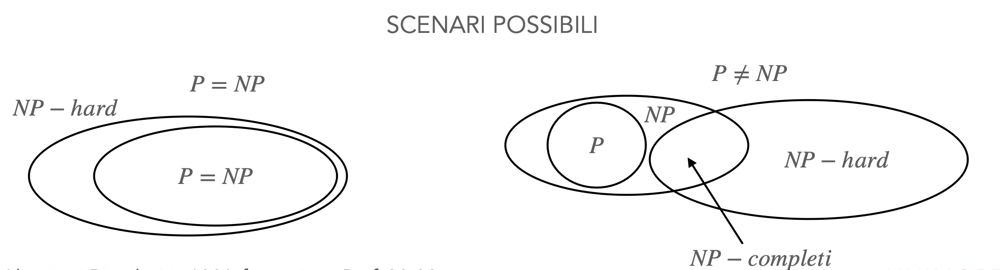
| Classe | Trovare Soluzione (Tempo Polinomiale) | Verificare Soluzione (Tempo Polinomiale) | Relazione Insiemistica |
|---|---|---|---|
| P | SÌ | SÌ | $P \subseteq NP$ |
| NP | NO (o non lo sappiamo) | SÌ | Contiene P e NP-Complete |
| NP-Complete | NO | SÌ | Intersezione tra NP e NP-Hard |
| NP-Hard | NO | NO (non garantito) | Almeno difficile quanto ogni problema in NP |
Confrontiamo la difficoltà di due algoritmi: Riduzione di Karp
Definizione: Un problema decisionale $A$ è riducibile in tempo polinomiale a $B$ ($A \leq_p B$) se:
- Ogni istanza di $A$ può essere trasformata in tempo polinomiale in un'istanza di $B$
- Ogni istanza positiva di $A$ viene trasformata in un'istanza positiva di $B$
- Ogni istanza negativa di $A$ viene trasformata in un'istanza negativa di $B$
Intuizione: $A \leq_p B$ significa che:
- Il problema $B$ non è più facile di $A$ (un algoritmo per $B$ può risolvere $A$)
- Il problema $A$ non è più difficile di $B$
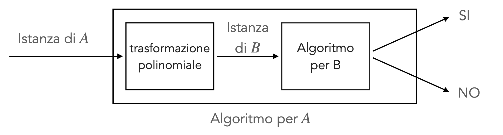
Conseguenze
Se $A \leq_p B$ allora:
- $B \in P \Rightarrow A \in P$ 🚀 abbiamo un algoritmo polinomiale per $A$ 🚀
- $A \notin P \Rightarrow B \notin P$ non abbiamo un algoritmo polinomiale per A 🥲, quindi neanche per B 🥲
- $B \leq_p A \Rightarrow A \equiv B$ i problemi sono equivalentemente difficili
Proprietà: La riduzione polinomiale è transitiva: $A \leq_p B \land B \leq_p C \Rightarrow A \leq_p C$.
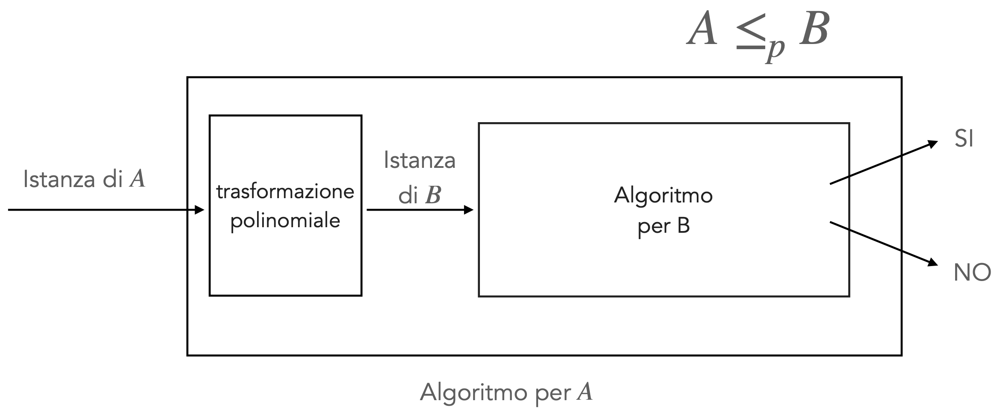
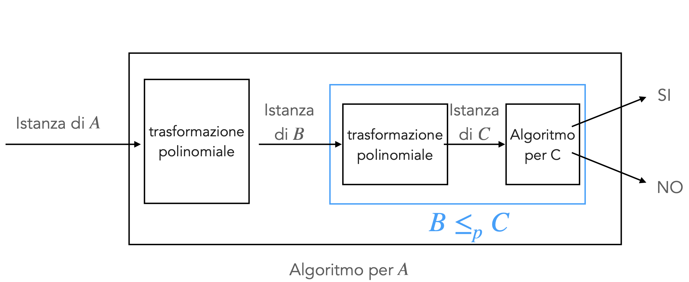
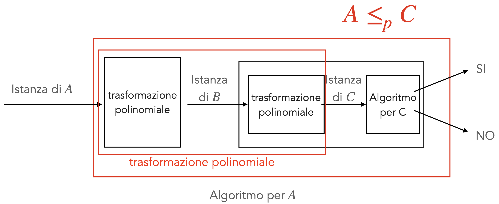
Classe NP (Non-deterministic Polynomial Time)
Esempio: Ciclo Hamiltoniano
- INPUT: Grafo $G = (V, E)$
- OUTPUT: Esiste un ciclo in $G$ che passa per tutti i nodi esattamente una volta?
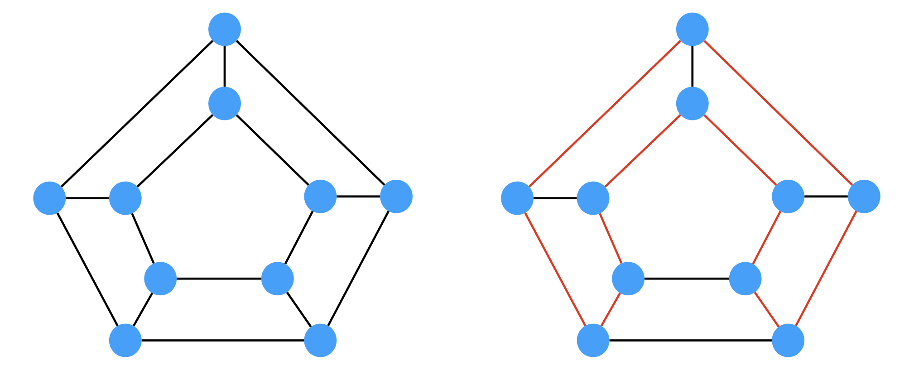
Per questo problema:
- Non si conoscono algoritmi polinomiali
- Un algoritmo forza bruta richiede tempo fattoriale
- Possiamo verificare una soluzione in tempo polinomiale: data una permutazione dei nodi, possiamo verificare in tempo lineare se rappresenta un ciclo hamiltoniano
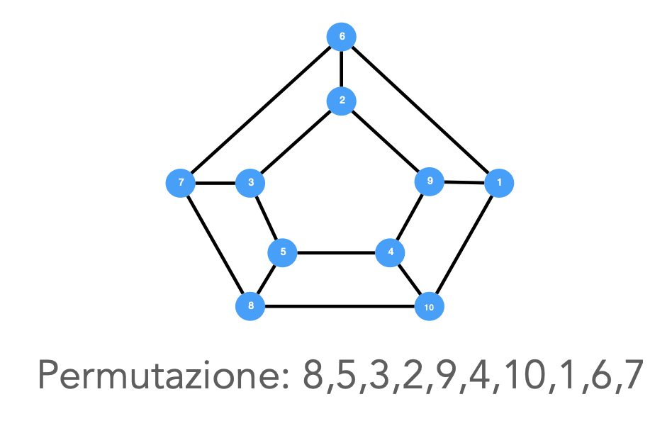
Classe NP-Completo
Definizione: Un problema decisionale $A$ è NP-completo se:
- $A \in NP$
- $\forall B \in NP : B \leq_p A$
Come dimostrare che un Problema è NP-Completo
Per dimostrare che $A$ è NP-completo, sfruttiamo la transitività della riduzione:
- Dimostrare che $A \in NP$
- Scegliere un problema $B$ già dimostrato NP-completo
- Dimostrare che $B \leq_p A$
Teoremi di Cook (1971) e Levin (1973): Il primo problema dimostrato NP-completo è SAT (Satisfiability).
SAT: Data una formula in forma normale congiuntiva (FNC), esiste un assegnamento di verità che la renda vera?
- Esempio: $(a \lor b \lor c) \land (\neg b \lor c) \land (\neg a \lor \neg b \lor c)$
P.S. and --> $\land$ or --> $\lor$
Teorema Fondamentale
Se si dimostra che un problema NP-completo:
- Ha un algoritmo polinomiale, allora $P = NP$
- Non ha algoritmi polinomiali, allora $P \neq NP$
Classe NP-Hard
Definizione: Un problema $A$ (non necessariamente decisionale) è NP-hard se:
- $\forall B \in NP : B \leq_p A$
Differenza con NP-completo: un problema NP-hard non è necessariamente in NP (ad esempio, problemi di ottimizzazione).
Come Dimostrare che un Problema è NP-Hard
Per dimostrare che $A$ è NP-hard:
- Scegliere un problema $B$ già dimostrato NP-completo
- Dimostrare che $B \leq_p A$
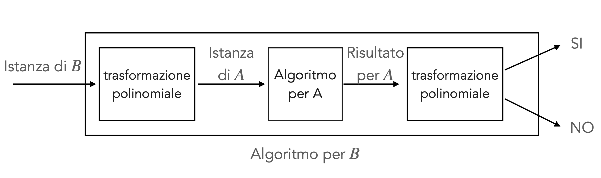
N.B.: Non è detto che A abbia un algoritmo verificatore polinomiale
Soluzioni per Problemi NP-Hard
Molti problemi NP-hard hanno importanti applicazioni e non possono essere ignorati. Possibili soluzioni:
- Risolvere efficientemente solo istanze piccole
- Utilizzare euristiche
- Utilizzare algoritmi paralleli/distribuiti
- Utilizzare algoritmi di approssimazione: restituiscono in tempo polinomiale una soluzione ammissibile con garanzie sul discostamento dal costo ottimo
Teorema: Il problema del Commesso Viaggiatore (TSP) è NP-Hard
Obiettivo: Dimostrare che $TSP (Optmization) \geq_p HC (decisionale)$.
Vogliamo dimostrare che se avessimo un oracolo (un algoritmo efficiente) in grado di risolvere il TSP, potremmo usarlo per risolvere il problema del Ciclo Hamiltoniano (HC).
Poiché il problema del Ciclo Hamiltoniano ($HC$) è noto essere NP-Completo, se dimostriamo che esso è riducibile polinomialmente al TSP di ottimizzazione, allora il TSP è almeno tanto difficile quanto un problema NP-Completo, dunque è NP-Hard.
1. Intuizione e Strategia della Riduzione
Il problema $HC$ è un problema decisionale (Esiste un ciclo? Sì/No), mentre il $TSP$ è un problema di ottimizzazione (Trova il ciclo di costo minimo).
Per collegarli, dobbiamo trasformare la struttura topologica del grafo di HC in costi per il TSP.
L'idea chiave è penalizzare l'uso di archi non esistenti:
- Assegniamo costo 0 agli archi che esistono realmente (nessuna penalità).
- Assegniamo costo 1 agli archi che non esistono (penalità).
In questo modo, il costo totale del tour fungerà da "rivelatore": se il costo è 0, il tour non ha mai "barato" (ha usato solo archi esistenti); se il costo è $\ge 1$, il tour è stato costretto a "barare" (ha usato archi che non c'erano in origine).
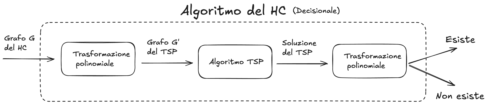
2. Definizione Formale della Riduzione
Costruiamo un algoritmo di trasformazione $f$ che mappa un'istanza $G$ di HC in un'istanza $G'$ di TSP. - Input: Grafo $G = (V, E)$. - Output: Grafo completo ponderato $G' = (V, E')$ con funzione costo $c$.
Costruzione di $G'$:
- Vertici: $V' = V$ (stessi nodi).
- Archi: $E' = V \times V$ (grafo completo: colleghiamo tutto con tutto).
- Pesi: Per ogni coppia $(u, v)$, il peso è definito come:$$c(u, v) = \begin{cases} 0 & \text{se } (u, v) \in E \quad (\text{arco originale}) \ 1 & \text{se } (u, v) \notin E \quad (\text{arco fittizio}) \end{cases}$$ _Nota: La costruzione di $G'$ richiede di iterare su tutte le coppie di nodi, impiegando un tempo $O(|V|^2)$, che è polinomiale.
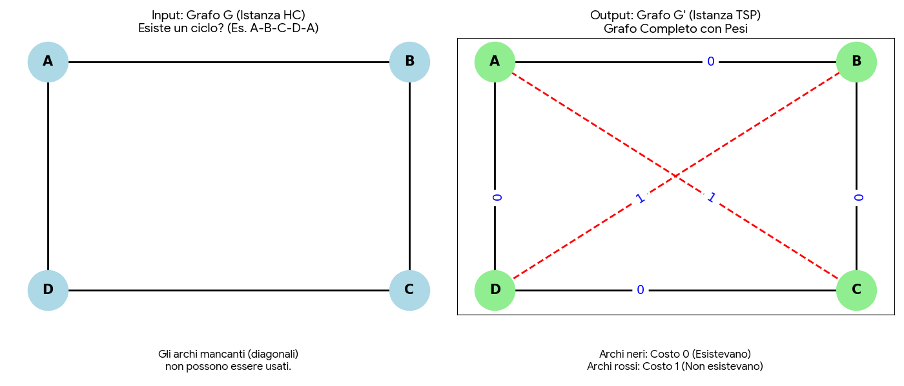
3. Dimostrazione di Correttezza
Sia $C_{min}$ il valore della soluzione ottima restituita dal TSP su $G'$. Dobbiamo dimostrare che $C_{min} = 0 \iff G \text{ ha un HC}$.
Direzione A
Ipotesi: $G \text{ ha un HC} \implies$ Tesi: $C_{min} = 0$
-
Ragionamento: Se $G$ ha un ciclo Hamiltoniano, esiste una permutazione di vertici collegati solo da archi in $E$.
-
Nel grafo TSP: Poiché abbiamo mappato tutti gli archi di $E$ con peso $0$, questo ciclo esiste anche in $G'$ e ha costo somma $0$. Dato che i pesi sono non-negativi, $0$ è il minimo possibile.
-
Conclusione: L'algoritmo TSP troverà questo tour (o uno equivalente) e restituirà $0$.
Direzione B
Ipotesi: $C_{min} = 0 \implies$ Tesi: $G$ ha un HC
(Utilizziamo l'implicazione diretta sul valore del costo, che è più intuitiva della contronominale per chi legge).
-
Ragionamento: Supponiamo che l'algoritmo TSP restituisca un tour di costo $0$.
-
Analisi dei pesi: Poiché la somma dei pesi è $0$ e i pesi possibili sono solo ${0, 1}$, questo implica che ogni singolo arco del tour ha peso $0$.
-
Legame con $G$: Per costruzione, un arco ha peso $0$ in $G'$ solo se esisteva in $G$.
-
Conclusione: Il tour trovato dal TSP è quindi composto esclusivamente da archi originali di $G$. Poiché un tour TSP visita ogni nodo esattamente una volta, questo corrisponde esattamente alla definizione di Ciclo Hamiltoniano in $G$.
Nota logica Dimostrando $C_{min} = 0 \implies G \text{ ha un HC}$ abbiamo dimostrato anche la sua contronominale:
Ipotesi: $G \text{ non ha un HC} \implies$ Tesi: $C_{min} \ne 0$ (C non può essere negativa, quindi $C \ge 1$)_
Infatti, se $C_{min} \ge 1$, significa che ogni possibile tour deve usare almeno un arco fittizio, quindi non esiste un HC in $G$._
4. Conclusione
La riduzione è polinomiale e valida. Risolvere il TSP permette di decidere HC:
-
Se $TSP(G') = 0 \rightarrow$ Risposta HC: SÌ.
-
Se $TSP(G') \ge 1 \rightarrow$ Risposta HC: NO.
Poiché HC è NP-Completo, TSP (Ottimizzazione) è NP-Hard.
Approfondimento: Perché scegliere pesi 1 e 2 invece di 0 e 1?
La scelta dei pesi nella riduzione non è casuale, ma determina quale variante del TSP stiamo dimostrando essere NP-Hard.
1. Il Test della Disuguaglianza Triangolare
La disuguaglianza triangolare è la regola che rende un grafo "geometricamente sensato". Essa afferma che andare direttamente da $A$ a $B$ non deve mai costare più che passare attraverso un intermedio $C$:
$$c(u, w) \le c(u, v) + c(v, w)$$
Analizziamo i due casi:
Caso A: Pesi ${0, 1}$ (La riduzione "Base")
- Arco presente ($u,v$) e ($v,w$) $\to$ costo $0$.
-
Arco mancante ($u,w$) $\to$ costo $1$.
-
Verifica: $1 \le 0 + 0 \implies 1 \le 0$ (FALSO!)
-
Conclusione: Questa riduzione genera un grafo che viola la geometria euclidea. Stiamo dimostrando la difficoltà del TSP Generale.
Caso B: Pesi ${1, 2}$ (La riduzione "Metrica")
- Arco presente ($u,v$) e ($v,w$) $\to$ costo $1$.
-
Arco mancante ($u,w$) $\to$ costo $2$.
-
Verifica: $2 \le 1 + 1 \implies 2 \le 2$ (VERO!)
-
Conclusione: Questa riduzione genera un grafo che rispetta la geometria. Stiamo dimostrando la difficoltà del Metric-TSP.
2. Perché questa distinzione è cruciale? (Il vero motivo teorico)
La distinzione riguarda l'approssimabilità:
-
TSP Generale (Pesi 0/1):
È un problema "cattivo". Non solo è NP-Hard, ma non è nemmeno approssimabile.
Teorema: Se esistesse un algoritmo che approssima il TSP generale entro un fattore polinomiale, allora $P=NP$.
Quindi, con pesi 0/1 dimostriamo che il caso peggiore assoluto è intrattabile.
-
Metric-TSP (Pesi 1/2):
È un problema "più gentile". È NP-Hard (come dimostrato dalla riduzione con pesi 1/2), ma appartiene alla classe APX.
Esistono algoritmi efficienti che garantiscono una soluzione vicina all'ottimo:
-
2-Approximation: Basato sull'Albero di Copertura Minimo (MST).
-
Algoritmo di Christofides: Garantisce un'approssimazione di fattore $1.5$ (o $3/2$).
-
Fattore di approssimazione (questa parte devo ancora capirla)
Il fattore di approssimazione (spesso indicato con la lettera greca $\rho$, "rho", o $\alpha$) è la misura della "garanzia di qualità" che un algoritmo ci offre nel caso peggiore.
Definizione Formale di Algoritmo di Approssimazione
Sia $\Pi$ un problema di ottimizzazione (minimizzazione o massimizzazione) e sia $I$ una generica istanza di questo problema.
Indichiamo con:
-
$OPT(I)$: il valore della soluzione ottima per l'istanza $I$.
-
$A(I)$: il valore della soluzione restituita dal nostro algoritmo (deterministico) $A$ per l'istanza $I$.
Diciamo che l'algoritmo $A$ è un algoritmo di $\rho$-approssimazione (o ha un fattore di approssimazione $\rho$) se, per ogni istanza $I$ di dimensione $n$, vale la seguente relazione: $$A(I) \le \rho \cdot OPT(I) \Rightarrow \frac{A(I)}{OPT(I)} \le \rho(n) \quad \text{(per problemi di minimizzazione)}$$ oppure $$A(I) \ge \rho \cdot OPT(I) \Rightarrow \frac{OPT(I)}{A(I)} \le \rho(n) \quad \text{(per problemi di massimizzazione)}$$
In entrambi i casi, il rapporto è definito in modo da essere sempre $\ge 1$.
-
Se $\rho(n) = 1$, l'algoritmo è esatto (trova l'ottimo).
-
Se $\rho(n) > 1$, l'algoritmo è approssimato. Più $\rho$ è vicino a 1, migliore è l'algoritmo.
Nota Bene:
Il fattore $\rho$ è una garanzia nel caso peggiore (worst-case).
Non stiamo dicendo che l'algoritmo sbaglia sempre di un fattore $\rho$. Stiamo dicendo che non sbaglierà mai più di un fattore $\rho$, nemmeno nell'istanza più "cattiva" possibile che l'esaminatore possa inventare.
Tipologie di Fattori di Approssimazione
Nel nostro corso, incontriamo principalmente tre classi di $\rho$:
-
Fattore Costante ($\rho = k$):
Il caso ideale per un problema NP-Hard. L'errore non cresce con la dimensione dell'input.
-
Esempio: Vertex Cover ha $\rho = 2$.
-
Esempio: Metric TSP (con disuguaglianza triangolare) ha $\rho = 2$ (o $\rho = 1.5$ con Christofides).
-
-
Fattore Logaritmico ($\rho = O(\log n)$):
L'errore cresce lentamente al crescere dell'input.
- Esempio classico: Set Cover (Copertura di Insiemi). Non puoi avere un fattore costante qui (salvo P=NP), il meglio che possiamo fare è $\ln n$.
-
Fattore Polinomiale ($\rho = O(n^k)$):
L'approssimazione degrada molto rapidamente. Spesso è inutile in pratica, ma teoricamente interessante.
- Esempio: General TSP (senza disuguaglianza triangolare). Qui il fattore di approssimazione può essere arbitrariamente grande ($2^n$, o peggio), rendendo il problema inapprossimabile.
La Tecnica Formale di Dimostrazione (Il "Lower Bound")
Come facciamo a calcolare $\rho$ se non conosciamo $OPT(I)$?
Formalizziamo il ragionamento che abbiamo fatto prima.
Per dimostrare che un algoritmo $A$ è una $\rho$-approssimazione per un problema di minimizzazione, dobbiamo trovare un Lower Bound (LB) tale che:
$$LB(I) \le OPT(I)$$
E dimostrare che il nostro algoritmo soddisfa:
$$A(I) \le \rho \cdot LB(I)$$
Combinando le due disuguaglianze:
$$A(I) \le \underbrace{\rho \cdot LB(I)}{\text{Limite calcolabile}} \le \underbrace{\rho \cdot OPT(I)}$$
$$\Rightarrow \frac{A(I)}{OPT(I)} \le \rho$$
Q.E.D. (Come Volevasi Dimostrare).
Esempio: Il Vertex Cover
Applichiamo il rigore al Vertex Cover.
-
Algoritmo $A$:
-
Trova un Matching Massimale $M$ nel grafo $G=(V,E)$.
-
Restituisci l'insieme $S$ composto da tutti gli estremi degli archi in $M$.
-
Costo: $|S| = 2 \cdot |M|$.
-
-
Il Lower Bound ($LB$):
-
Sia $S^*$ la soluzione ottima (il Vertex Cover minimo).
-
Poiché gli archi in $M$ sono disgiunti (non condividono vertici), per coprirli tutti $S^*$ deve contenere almeno un vertice per ogni arco in $M$.
-
Formalmente: $|S^*| \ge |M|$. Questo è il nostro $LB$.
-
-
Calcolo di $\rho$:
$$\frac{A(I)}{OPT(I)} = \frac{|S|}{|S^*|} \le \frac{2 \cdot |M|}{|M|} = 2$$
Quindi, l'algoritmo è una 2-approssimazione.
Vertex cover
Dato un grafo non orientato $G = (V, E)$:
-
Un Vertex Cover è un sottoinsieme di vertici $V' \subseteq V$ tale che per ogni arco $(u, v) \in E$, si ha che $u \in V'$ oppure $v \in V'$ (o entrambi).
-
Problema di Ottimizzazione: Trovare il $V'$ con la cardinalità minima (minimo numero di vertici).
-
Problema Decisionale: Dato $G$ e un intero $k$, esiste un Vertex Cover di dimensione $\le k$?
La Complessità (Perché è "difficile"?)
Nel nostro corso classifichiamo il problema decisionale del Vertex Cover come NP-Completo. Cosa significa per il tuo esame?
-
È in NP: Se ti do una soluzione (un insieme di vertici), puoi verificare in tempo polinomiale se copre tutti gli archi.
-
È NP-Hard: È difficile quanto il problema più difficile in NP (spesso si dimostra riducendo il problema della Clique o 3-SAT al Vertex Cover).
In pratica: non conosciamo (e probabilmente non esiste) un algoritmo che trovi la soluzione esatta (il minimo assoluto) in tempo polinomiale. Se il grafo è grande, trovare l'ottimo richiederebbe tempi astronomici.
Teorema: Il problema del Vertex Cover (ottimizzazione) è NP-Hard.
Dato che la versione decisionale del Vertex Cover è NP-completo, definiamo la riduzione $VCD \le_p VC$ . Il Vertex Cover (ottimizzazione) è difficile almeno quanto il Vertex Cover Decisionale.
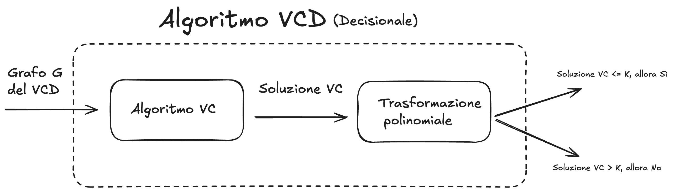
La riduzione è molto semplice perché l'istanza dell'input dei due algoritmi è la stessa, ci serve solo definire una trasformazione polinomiale dell'output.Quindi: 1. Utilizziamo l'algoritmo VC sul grado G per trovare il Vertex Cover $V' \subseteq V$ di cardinalità minima 2. Definiamo la trasformazione polinomiale dell'output: - se $|V'| \leq k$ allora rispondo sì. - se $|V'| \gt k$ allora rispondo no.
Una volta trovato il Vertex Cover con cardinalità minima, possiamo confrontarlo con k e quindi fornire la risposta decisionale del Vertex Cover. Il numero di chiamate dell'algoritmo dell'algoritmo è costante (una volta sola viene chiamato) e anche il numero di operazioni extra è costante. Dunque possiamo definire anche l'algoritmo del Vertex Cover np-hard.
Approfondimento
Possiamo definire anche dimostrare il contrario: $VC \le_p VCD$ Anche la versione decisionale del Vertex Cover è difficile almeno quanto la versione di ottimizzazione.
Self-Reduction di Vertex Cover (Approfondimento)
Dimostriamo che il problema del Vertex Cover di ottimizzazione è equalmente difficile come il Vertex Cover decisionale.
Il problema di ricerca del Vertex Cover ($VC_{\text{search}}$) è polinomialmente riducibile al problema decisionale del Vertex Cover ($VC_{\text{decision}}$).
$$VC_{\text{search}} \leq_P VC_{\text{decision}}$$
Ciò implica che se esiste un algoritmo polinomiale per decidere se esiste una copertura di dimensione $k$, esiste anche un algoritmo polinomiale per trovare i vertici che compongono tale copertura.
Ipotesi: Sia $A(G, k)$ un algoritmo "oracolo" per $VC_{\text{decision}}$ che accetta in input un grafo $G$ e un intero $k$, e restituisce: - YES: se esiste un Vertex Cover di dimensione $\le k$. - NO: se non esiste.
Procedimento
L'algoritmo di ricerca si svolge in due fasi sequenziali.
Fase 1: Calcolo della Cardinalità Minima ($k_{opt}$)
L'obiettivo è determinare la dimensione minima esatta del Vertex Cover.
Poiché la dimensione della soluzione è un intero compreso tra $0$ e $|V|$, utilizziamo una Ricerca Binaria interrogando l'oracolo $A$.
-
Inizializziamo l'intervallo di ricerca: $min = 0$, $max = |V|$.
-
Mentre $min < max$:
- Poniamo $mid = \lfloor \frac{min + max}{2} \rfloor$.
-
Eseguiamo $A(G, mid)$.
-
Se l'esito è YES: la soluzione ottima è $\le mid$, quindi poniamo $max = mid$.
- Se l'esito è NO: la soluzione ottima è $> mid$, quindi poniamo $min = mid + 1$.
-
Al termine, $k_{opt} = min$.
Costo Fase 1: $O(\log |V|) \times Costo(A)$.
Fase 2: Costruzione dell'Insieme di Copertura ($C$)
L'obiettivo è individuare quali specifici vertici compongono l'insieme $C$ di cardinalità $k_{opt}$.
Iteriamo su ogni vertice $v \in V$ del grafo originale $G=(V, E)$.
- Inizializziamo $C = \emptyset$ e $k = k_{opt}$.
-
Per ogni vertice $v \in V$:
- Costruiamo temporaneamente il grafo $G' = G \setminus {v}$ (rimuovendo $v$ e i suoi archi incidenti).
- Interroghiamo l'oracolo: $A(G', k-1)$.
-
Analisi della risposta:
-
Esito YES: Significa che è possibile coprire i restanti archi con i $k-1$ vertici rimanenti. Dunque, $v$ può far parte di una soluzione ottima.
- Azione: Aggiungiamo $v$ a $C$ ($C \leftarrow C \cup {v}$).
- Decrementiamo il budget ($k \leftarrow k-1$).
- Aggiorniamo il grafo corrente rimuovendo definitivamente $v$ ($G \leftarrow G'$).
-
Esito NO: Significa che rimuovendo $v$, il resto del grafo richiede ancora $k$ vertici per essere coperto. Non abbiamo "guadagnato" nulla spendendo un vertice su $v$.
- Azione: $v$ non viene incluso in $C$. Il grafo $G$ e il budget $k$ rimangono invariati per la prossima iterazione.
-
-
Restituiamo $C$.
Costo Fase 2: $O(|V|) \times Costo(A)$.
Conclusione sulla Complessità
L'intero procedimento richiede un numero di chiamate all'oracolo pari a $O(\log |V| + |V|)$, che è polinomiale rispetto alla dimensione dell'input. Pertanto, la riduzione è polinomiale.
Approssimazione di Vertex Cover
Ci sono vari modi in cui possiamo andare a definire un algoritmo di approssimazione: - Algoritmi greedy - Programmazione Lineare intera
Algoritmi greedy
La strategia Greedy (ingorda) è spesso la prima tecnica utilizzata per tentare di approssimare problemi di ottimizzazione: si costruisce la soluzione passo dopo passo, effettuando ad ogni iterazione la scelta che appare localmente migliore. Tuttavia, per il problema del Vertex Cover, la definizione di "scelta migliore" è determinante. Analizziamo due euristiche naturali e dimostriamo perché non garantiscono un fattore di approssimazione costante.
La strategia consiste nel sceglier un determinato nodo del grafo con una certa strategia, poi rimuovere i vari archi collegati. Questo viene ripetuto fino a quando vengono rimossi tutti gli archi del grafo.
Approccio naive
Scelgo un nodo qualsiasi con un grado maggiore di 0
Algorithm Greedy-VC-Naive(G = (V, E))
C = {}
WHILE (E is not empty) DO
1. Scegli un vertice arbitrario v in V che abbia grado > 0
2. C = C U {v}
3. Rimuovi da E tutti gli archi incidenti a v
RETURN C
Il costo computazionale dell'algoritmo è $O(|V |+ |E|)$.
Sebbene l'algoritmo produca sempre una copertura valida in tempo polinomiale, il fattore di approssimazione non è limitato (non è costante).
Controesempio (Grafo a Stella):
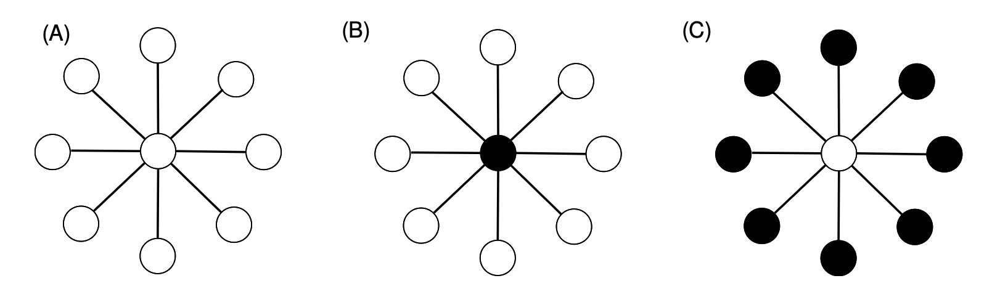
Consideriamo un grafo a stella $S_k$ composto da un nodo centrale $c$ collegato a $k$ foglie $l_1, l_2, ..., l_k$.
-
Soluzione Ottima ($C^*$): Basta selezionare il solo nodo centrale $c$. Dimensione $|C^*| = 1$.
-
Caso Peggiore dell'Algoritmo: L'algoritmo potrebbe sfortunatamente selezionare, uno dopo l'altro, tutti i nodi foglia $l_1, ..., l_k$. Ogni volta che seleziona una foglia, copre solo un arco.
-
Risultato: L'algoritmo restituisce un insieme di dimensione $k$.
Rapporto di Approssimazione:
$$\rho = \frac{|C_{greedy}|}{|C^*|} = \frac{k}{1} = k$$
Poiché $k$ dipende dal numero di vertici del grafo ($n$), il rapporto di approssimazione è $O(n)$, il che è inaccettabile per un algoritmo di approssimazione.
Approccio euristico
Per ovviare al problema della stella, è naturale raffinare la scelta greedy: invece di un nodo a caso, scegliamo il nodo che "paga di più", ovvero quello che copre il maggior numero di archi in un colpo solo.
Algorithm Greedy-VC-MaxDegree(G = (V, E))
C = {}
WHILE (E is not empty) DO
1. Scegli il vertice v in V con il grado corrente massimo
2. C = C U {v}
3. Rimuovi da E tutti gli archi incidenti a v
4. Aggiorna i gradi dei vertici rimanenti
RETURN C
Questa strategia risolve brillantemente il caso della stella (selezionerebbe subito il centro). Tuttavia, è stato dimostrato che anche questa euristica non ottiene un fattore di approssimazione costante.
Il Limite Teorico (Perché fallisce):
Mentre per la stella funziona, esistono grafi appositamente costruiti in cui l'algoritmo viene "ingannato" nel preferire una lunga sequenza di nodi a grado medio-alto, invece di pochi nodi ottimi.
È noto in letteratura (dimostrazione di Chvátal, 1979 per Set Cover, applicabile qui) che questo algoritmo ha un fattore di approssimazione logaritmico: $$\rho \approx \ln(n)$$ Dove $\ln(n)$ è il logaritmo naturale del numero di vertici. Sebbene $\ln(n)$ cresca molto lentamente, non è un numero costante (come 2 o 1.5). Per grafi molto grandi, l'errore può diventare arbitrariamente grande.
Il "Grafo Ingannevole" (Come l'algoritmo viene fregato) (Super approfondimento)
Il Vertex Cover è un caso particolare del Set Cover (dove gli "elementi da coprire" sono gli archi e gli "insiemi" sono i nodi). Poiché l'approccio greedy per il Set Cover ha un'approssimazione pari a $H_d$ (l'$n$-esimo numero armonico, dove $d$ è il grado massimo), il fattore di approssimazione è effettivamente $O(\log n)$.
Per visualizzare il limite teorico, è utile capire come viene costruito il grafo che "inganna" l'algoritmo.
Immagina un grafo bipartito con due insiemi di nodi, A e B:
-
L'insieme A contiene un numero piccolo di nodi, diciamo $k$. (Questo sarà il Vertex Cover ottimo).
-
L'insieme B contiene molti più nodi, suddivisi in "livelli" basati sul loro grado.
-
Gli archi sono collegati in modo tale che, all'inizio, i nodi in B abbiano un grado leggermente superiore ai nodi in A.
Cosa fa l'algoritmo?
L'algoritmo Greedy guarderà il grafo e dirà: "I nodi in B hanno grado più alto, ne prendo uno da B".
Una volta rimosso quel nodo e i suoi archi, i gradi si aggiornano, ma la struttura è creata ad arte affinché ci sia sempre un nodo in B che sembra migliore dei nodi in A, passo dopo passo.
Alla fine, l'algoritmo sceglie quasi tutti i nodi dell'insieme B (che sono tantissimi), mentre la soluzione ottima era prendere semplicemente i pochi nodi dell'insieme A. È così che si accumula il fattore logaritmico $\ln(n)$.
Quello che succede in scala molto piccola è più o meno questo:
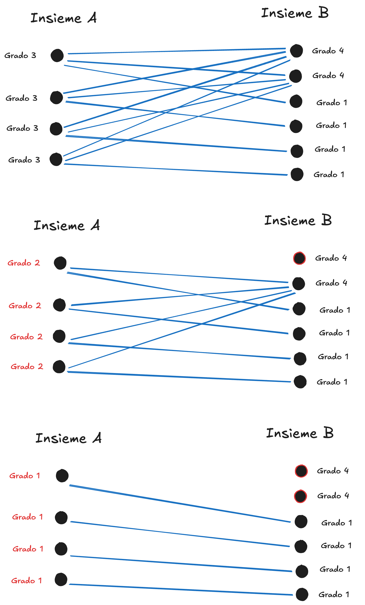
Il vero grafo bipartito che inganna l'algoritmo dovrebbe essere questo:
Caption
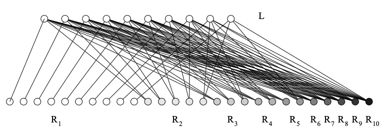
Preso da https://cgi.csc.liv.ac.uk/~michele/TEACHING/COMP309/2005/Lec10.4.4.pdf
Approccio Euristico corretto: Usiamo gli archi!
L'idea è semplice ma potente: troviamo un insieme di archi disgiunti (che non condividono vertici) e prendiamo entrambi gli estremi di questi archi.
Ecco lo pseudocodice formale:
APPROX-VERTEX-COVER(G)
1. C ← ∅
2. E' ← E[G]
3. while E' ≠ ∅ do
4. Scegli un arco arbitrario (u, v) ∈ E'
5. C ← C ∪ {u, v}
6. Rimuovi da E' ogni arco incidente su u o su v
7. return C
Analisi della Complessità:
Il tempo di esecuzione è $O(V + E)$. Possiamo rappresentare il grafo con liste di adiacenza e marcare i vertici man mano che vengono rimossi/coperti. Visitiamo ogni vertice e ogni arco un numero costante di volte.
Correttezza e Analisi del Fattore di Approssimazione
Teorema: APPROX-VERTEX-COVER è un algoritmo di approssimazione polinomiale con fattore $\rho = 2$.
Dimostrazione:
Sia $C$ l'insieme dei vertici restituiti dall'algoritmo. Sia $C^*$ (o $OPT$) una copertura dei vertici ottima (di cardinalità minima). Sia $A$ l'insieme degli archi selezionati nella riga 4 dell'algoritmo (questo insieme $A$ costituisce un Matching Massimale).
Passo 1: Relazione tra C e A
L'algoritmo inserisce in $C$ esattamente i due estremi di ogni arco scelto in $A$. Poiché nessun arco viene scelto due volte e gli archi in $A$ sono disgiunti:
$$|C| = 2 \cdot |A| \quad \text{(Eq. 1)}$$
Passo 2: Relazione tra $C^*$ e A (Lower Bound)
Qualsiasi Vertex Cover valido deve coprire tutti gli archi di $G$, inclusi quelli in $A$.
Poiché gli archi in $A$ sono disgiunti (non condividono vertici), nessun singolo vertice può coprire più di un arco di $A$.
Di conseguenza, per coprire $|A|$ archi disgiunti, sono necessari almeno $|A|$ vertici distinti.
Quindi, la soluzione ottima deve avere cardinalità:
$$|C^*| \ge |A| \quad \text{(Eq. 2)}$$
(Nota: Questo è il passaggio che corregge il refuso delle slide della prof).
Passo 3: Conclusione
Combinando l'Eq. 1 e l'Eq. 2:
Dalla (Eq. 2) sappiamo che $|A| \le |C^*|$. Sostituiamo $|A|$ nella (Eq. 1):
$$|C| = 2 \cdot |A| \le 2 \cdot |C^*|$$
Riscrivendo in termini di rapporto di approssimazione:
$$\frac{|C|}{|C^*|} \le 2$$
C.V.D. (Come Volevasi Dimostrare).
L'Analisi è "Tight" (Stretta)?
Un professore potrebbe chiederti: "Possiamo fare meglio di 2 con questo specifico algoritmo?" o "L'analisi è pessimistica?"
La risposta è: Sì, l'analisi è tight. Ci sono casi in cui l'algoritmo sbaglia esattamente di un fattore 2.
Esempio Formale (Il Grafo Bipartito Completo $K_{n,n}$):
Immagina un grafo con due insiemi di vertici $U = {u_1, ..., u_n}$ e $W = {w_1, ..., w_n}$, dove tutti gli $u$ sono collegati a tutti i $w$.
-
Soluzione Ottima ($OPT$): Basta prendere tutti i vertici di $U$ (o tutti quelli di $W$). Cardinalità $= n$.
-
Soluzione Algoritmo Greedy: L'algoritmo potrebbe sfortunatamente scegliere una serie di archi disgiunti come $(u_1, w_1), (u_2, w_2), ..., (u_n, w_n)$. Per ogni arco, prende entrambi i vertici. Cardinalità $= 2n$.
Rapporto: $2n / n = 2$.
Questo dimostra che non possiamo dimostrare un fattore inferiore a 2 per questo algoritmo specifico.
Vertex Cover Non Pesato
Non approfondito e non è materiale d'esame
Approssimazione Vertex Cover: "Relax & Round"
Il problema del Vertex Cover (copertura dei vertici) ci chiede di trovare il numero minimo di vertici per "toccare" tutti gli archi del grafo. Sappiamo che trovare la soluzione ottima esatta è NP-Hard. Non possiamo farlo velocemente. Gli altri metodi di approssimazione hanno un fattore di approssimazione troppo alto, quindi proviamo a cambiare strategia.
L'idea geniale è questa:
-
Formuliamo il problema come se fosse una scelta binaria rigida (prendo o non prendo il nodo). Questo è difficile (Programmazione Lineare Intera - ILP).
-
Rilassiamo (Relax) le regole: permettiamo di prendere "frazioni" di nodi (es. prendo mezzo nodo). Questo diventa facile da risolvere (Programmazione Lineare - LP).
-
Arrotondiamo (Round): convertiamo le frazioni in scelte binarie (0 o 1) per ottenere una soluzione valida reale (ammissibile al problema ILP).
Approssimiamo l'algoritmo
Vediamo i dettagli formali per applicare l'approssimazione Relax&Round per il VertexCover
Passo 1: Formulazione ILP (Integer Linear Programming)
Immagina di associare a ogni vertice $v$ una variabile $x_v$.
- $x_v = 1$: il vertice è nel cover.
- $x_v = 0$: il vertice non è nel cover.
Vogliamo minimizzare il numero di vertici scelti ($\sum x_v$) con il vincolo che ogni arco $(u,v)$ sia coperto, cioè almeno uno dei due estremi deve essere scelto ($x_u + x_v \ge 1$).
Il vincolo difficile è che $x_v \in {0, 1}$. Questo vincolo di "interezza" rende il problema difficile.
Abbiamo quindi: $$ \begin{aligned} & \text{Formulazione ILP di Vertex Cover} \ & \min \quad \sum_{v \in V} x_v \ & \text{s.t.} \ & x_v + x_u \ge 1 \quad \forall (v, u) \in E \ & x_v \in {0, 1} \quad \forall v \in V \end{aligned} $$
Passo 2: Rilassamento (Relax)
Rimuoviamo il vincolo rigido $x_v \in {0, 1}$ e lo sostituiamo con $0 \le x_v \le 1$.
Abbiamo quindi: $$ \begin{aligned} & \text{Formulazione PL di Vertex Cover frazionario} \ & \min \quad \sum_{v \in V} x_v \ & \text{s.t.} \ & x_v + x_u \ge 1 \quad \forall (v, u) \in E \ & x_v \in [0, 1] \quad \forall v \in V \end{aligned} $$
Ora stiamo risolvendo un problema di Programmazione Lineare (LP).
-
Possiamo risolverlo in tempo polinomiale (è facile per un computer).
-
Otterremo una soluzione ottima frazionaria $x^$. Ad esempio, potremmo avere $x^_A = 0.5, x^_B = 0.5, x^_C = 0$.
Nota importante: Il costo di questa soluzione ottima frazionaria ($Cost(LP)$) sarà sicuramente minore o uguale al costo della soluzione ottima intera ($Cost(OPT)$), perché abbiamo meno restrizioni.
Passo 3: Arrotondamento (Round)
Ora dobbiamo tornare alla realtà. Non possiamo prendere "0.5 vertici". Dobbiamo decidere: 0 o 1?
La regola è semplice:
-
Se $x^*_v \ge 0.5$, allora impostiamo $x_v = 1$ (prendiamo il vertice).
-
Se $x^*_v < 0.5$, allora impostiamo $x_v = 0$ (scartiamo il vertice).
Perché funziona (Correttezza/Ammissibilità)?
Dobbiamo garantire che tutti gli archi siano coperti.
Per ogni arco $(u,v)$, il vincolo LP diceva che $x^_u + x^_v \ge 1$.
Matematicamente, è impossibile che due numeri siano entrambi strettamente minori di 0.5 e la loro somma sia $\ge 1$.
Quindi, almeno uno tra $x^_u$ e $x^_v$ deve essere $\ge 0.5$.
Di conseguenza, il nostro algoritmo arrotonderà almeno uno dei due a 1, coprendo l'arco.
Ovviamente non siamo certi che la soluzione sia ottima, ma possiamo dire che sia ammissibile.
3. Analisi del Fattore di Approssimazione (Cruciale!)
Vogliamo dimostrare che il costo della soluzione restituita dal nostro algoritmo $Cost(APPROX)$ è al massimo il doppio del costo della soluzione ottima ideale $Cost(OPT)$.
Definiamo i tre "attori" in gioco:
-
$Cost(OPT)$: Il costo della soluzione ottima Intera (il "vero" ottimo del problema, spesso impossibile da calcolare).
-
$Cost(X^*)$: Il costo della soluzione ottima Rilassata/Frazionaria (calcolata tramite LP).
- Nota Bene: La soluzione $X^$ è matematicamente perfetta per il problema rilassato, ma è quasi sempre INAMMISSIBILE* per il problema originale (non puoi comprare "mezzo nodo"). Tuttavia, ci serve come punto di riferimento matematico (Lower Bound).
-
$Cost(APPROX)$: Il costo della nostra soluzione Arrotondata (la soluzione reale che l'algoritmo restituisce, valida e intera).
Passo 1: Relazione tra Rilassato (LP) e Ottimo (ILP)
Il problema rilassato (LP) cerca il minimo in uno spazio di soluzioni molto più ampio di quello intero (ILP), poiché ammette anche le frazioni.
Essendo meno vincolato, il problema LP riesce a trovare un costo più basso o uguale rispetto a quando siamo costretti a usare solo numeri interi.
Quindi, il costo frazionario è un Lower Bound (limite inferiore) del costo vero:
$$Cost(X^*) \le Cost(OPT)$$
_(Intuizione: $X^$ costa poco perché "bara" usando le frazioni; $OPT$ costa di più perché deve rispettare le regole dell'interezza).
Passo 2: Relazione tra Arrotondamento e Rilassato
Analizziamo il costo introdotto dalla fase di arrotondamento per ogni singolo vertice $v$.
La nostra regola è: se $x^*_v \ge 0.5 \implies x_v = 1$, altrimenti $0$.
Confrontiamo il valore arrotondato $x_v$ con il valore frazionario originale $x^*_v$:
-
Se $x_v = 0$: il costo è nullo, la disuguaglianza $0 \le 2 \cdot x^*_v$ regge sempre.
-
Se $x_v = 1$: questo accade solo se $x^*_v \ge 0.5$.
-
Matematicamente: $1 \le 2 \cdot 0.5$.
-
Quindi: $x_v \le 2 \cdot x^*_v$.
-
In entrambi i casi, paghiamo al massimo il doppio del valore frazionario:
$$x_v \le 2 \cdot x^*_v \quad \forall v \in V$$
Passo 3: Conclusione (La Catena di Disuguaglianze)
Sommiamo i costi su tutti i vertici per ottenere il costo totale della nostra soluzione ($Cost(APPROX)$):
$$\begin{aligned} Cost(APPROX) &= \sum_{v \in V} x_v \ &\le \sum_{v \in V} 2 \cdot x^v && \text{(per il Passo 2)} \ &= 2 \cdot \sum x^_v \ &= 2 \cdot Cost(X^*) \end{aligned}$$
Ora sostituiamo $Cost(X^)$ usando la disuguaglianza del Passo 1*:
$$Cost(APPROX) \le 2 \cdot Cost(X^*) \le 2 \cdot Cost(OPT)$$
Teorema Dimostrato: L'algoritmo Relax & Round restituisce una soluzione valida con un costo che non supera mai il doppio dell'ottimo.
Bonus: spiegazione del fattore 2
Il fattore 2 non è casuale, ma è conseguenza diretta della necessità di garantire una soluzione valida (Safety).
-
Il Vincolo (Safety):
Per coprire un arco $(u,v)$, la somma delle variabili frazionarie deve essere $\ge 1$. Nel caso peggiore, la soluzione LP ripartisce il peso equamente: $x^_u = 0.5$ e $x^_v = 0.5$.
Per non lasciare l'arco scoperto, siamo costretti a porre la soglia di arrotondamento a 0.5 (se fosse più alta, arrotonderemmo entrambi a 0 e l'arco non sarebbe coperto).
-
Il Calcolo (Efficiency):
Il fattore di approssimazione è il rapporto massimo tra il costo che paghiamo (1, il nodo intero) e il costo che aveva calcolato l'LP (la soglia minima che fa scattare l'acquisto).
$$\text{Fattore} = \frac{\text{Costo Arrotondato}}{\text{Soglia Minima}} = \frac{1}{0.5} = \mathbf{2}$$
In breve: Poiché dobbiamo accettare valori bassi fino a 1/2 per garantire la correttezza, il nostro errore massimo sarà l'inverso di quel valore, ovvero 2.
BadNews. Non noto nessun algoritmo di approssimazione per Vertex Cover con fattore di approssimazione migliore di due, e non e noto se possibile approssimare meglio di due o no.
_Riprendiamo il discorso sul commesso viaggiatore, poi al massimo lo spostiamo dopo
TSP generale è approssimabile?
TEOREMA Se $P \neq NP$, allora per ogni costante $\rho \ge 1$ non esiste un algoritmo di approssimazione polinomiale per il TSP generale con fattore $\rho$.
1. La riduzione (Costruzione del Grafo $G'$)
Partiamo da un’istanza del problema del Ciclo Hamiltoniano (HC): un grafo $G = (V, E)$. Vogliamo sapere se $G$ ha un ciclo che tocca tutti i vertici. Costruiamo un nuovo grafo completo $G' = (V, E')$ per il TSP:
- Se un arco $e$ era presente nel grafo originale $G$, gli assegniamo costo 1.
- Se l'arco $e$ non era in $G$, gli assegniamo un costo pesantissimo: $\rho|V| + 1$.
2. Analisi dei due casi
-
Caso SI (G ha un ciclo hamiltoniano): In $G'$ esiste un tour di costo esattamente $|V|$ (composto da $|V|$ archi di costo 1). Questo è il valore ottimo $OPT$. Un algoritmo di approssimazione $A$ con fattore $\rho$ deve restituire una soluzione $SOL \le \rho \cdot OPT$. Quindi $SOL \le \rho \cdot |V|$.
-
Caso NO (G non ha un ciclo hamiltoniano): Qualsiasi tour in $G'$ deve usare almeno un arco che non era in $G$ (quelli che costano $\rho|V| + 1$). Il costo del tour ottimo in $G'$ sarà almeno $(\rho|V| + 1) + (|V| - 1)$, che è strettamente maggiore di $\rho|V|$. Di conseguenza, anche l'algoritmo $A$ dovrà restituire un valore $SOL > \rho|V|$.
3. Conclusione
Se avessimo l'algoritmo $A$, basterebbe guardare il costo della soluzione prodotta:
-
Se $costo \le \rho|V|$, allora $G$ ha un ciclo hamiltoniano.
-
Se $costo > \rho|V|$, allora $G$ non lo ha.
Avremmo risolto un problema NP-completo in tempo polinomiale, il che implicherebbe $P = NP$. E questo sarebbe assurdo.
Contesto generale
Il Travelling Salesman Problem (TSP) è un classico problema di ottimizzazione NP-hard.
Abbiamo visto che, nel caso generale, non è possibile progettare algoritmi di approssimazione con fattore costante, a meno di risultati molto forti sulla complessità.
La buona notizia è che questo risultato negativo non vale per tutte le istanze. Esiste infatti un sottoinsieme di istanze particolarmente rilevanti, in cui la funzione costo sugli archi rispetta la disuguaglianza triangolare. In questo caso diventa possibile progettare algoritmi di approssimazione efficaci.
TSP con disuguaglianza triangolare (TSPdt o TSP metric)
Ricordiamo che si tratta del problema del tsp con una garanzia in più: la diseguaglianza triangolare.
Proprietà triangolare
La funzione costo sugli archi soddisfa: $$ \forall i,j,k \in V:\quad c(i,j) \le c(i,k) + c(k,j) $$
📌 Intuizione
Andare direttamente da $i$ a $j$ non costa più che passare per un nodo intermedio.
Definizione formale del problema
Problema del Commesso Viaggiatore con disuguaglianza triangolare (TSPdt)
Input - Grafo completo non diretto $G = (V,E)$ - Funzione costo $c : E \rightarrow \mathbb{R}^+$ - $c$ soddisfa la disuguaglianza triangolare
Output - Un ciclo hamiltoniano su $G$ di costo minimo
Approssimazione per TSPdt
Per questo problema, un algoritmo di approssimazione deve restituire una soluzione ammissibile, cioè un ciclo hamiltoniano, che può avere un costo maggiore di quello ottimo.
Nel seguito verranno presentati due algoritmi progettati ad-hoc per il TSPdt; il secondo rappresenta un miglioramento del primo.
Notazione sui costi
Dato un sottografo: $$ G' = (V', E') \subseteq G = (V,E) $$
si definisce il costo: $$ \text{cost}(G') = \sum_{e \in E'} c(e) $$
Concetto utile: Ciclo Euleriano
Un concetto fondamentale per entrambi gli algoritmi è quello di ciclo euleriano.
Un ciclo euleriano è un cammino chiuso che attraversa esattamente una volta ciascun arco del grafo.
Un risultato classico afferma che un grafo ammette un ciclo euleriano se e solo se tutti i suoi nodi hanno grado pari. Quando questa condizione è soddisfatta, il ciclo euleriano può essere trovato in tempo polinomiale.
Proprietà fondamentale della disuguaglianza triangolare
Teorema — Accorciamento dei cammini nei grafi metrici
Sia $G$ un grafo con archi pesati tale che la funzione costo soddisfi la disuguaglianza triangolare, cioè: $$ \forall i,j,k \in V:\quad c(i,j) \le c(i,k) + c(k,j) $$
Sia inoltre: $$ C = \langle v_1, v_2, \dots, v_{k+1} \rangle $$ un cammino semplice in $G$, composto da $k$ archi.
Allora vale: $$ c(v_1, v_{k+1}) \le \sum_{i=1}^{k} c(v_i, v_{i+1}) $$
In altre parole, il costo dell’arco diretto tra il primo e l’ultimo nodo del cammino non è maggiore del costo dell’intero cammino.
Significato intuitivo
Il teorema formalizza un’idea molto naturale: nei grafi che rispettano la disuguaglianza triangolare, fare deviazioni non conviene.
Se si percorre un cammino passando per nodi intermedi, il costo complessivo non può essere inferiore a quello del collegamento diretto tra gli estremi.
Geometricamente, è l’equivalente del fatto che la linea retta è il percorso più breve.
Dimostrazione
Idea generale della dimostrazione
La dimostrazione si basa su un’induzione sulla lunghezza del cammino, cioè sul numero di archi $k$.
L’idea è quella di: - spezzare il cammino in parti più corte, - usare la disuguaglianza triangolare per eliminare nodi intermedi, - ridurre progressivamente il cammino fino a collegare direttamente i due estremi.
Caso base
Nel caso $k = 2$, il cammino è: $$ v_1 \rightarrow v_2 \rightarrow v_3 $$
La tesi diventa: $$ c(v_1, v_3) \le c(v_1, v_2) + c(v_2, v_3) $$
Questa è esattamente la disuguaglianza triangolare, quindi il caso base è immediatamente verificato.
Passo induttivo
Si assume che la tesi sia vera per tutti i cammini di lunghezza minore di $k$ e si considera un cammino di lunghezza $k$: $$ C = \langle v_1, v_2, \dots, v_{k-1}, v_k, v_{k+1} \rangle $$
Il costo totale del cammino può essere scritto come: $$ \sum_{i=1}^{k} c(v_i, v_{i+1}) = \sum_{i=1}^{k-2} c(v_i, v_{i+1}) + c(v_{k-1}, v_k) + c(v_k, v_{k+1}) $$
Applicando la disuguaglianza triangolare agli ultimi due archi si ottiene: $$ c(v_{k-1}, v_k) + c(v_k, v_{k+1}) \ge c(v_{k-1}, v_{k+1}) $$
Inoltre, per ipotesi induttiva, il costo del sottocammino che va da $v_1$ a $v_{k-1}$ è almeno: $$ c(v_1, v_{k-1}) $$
Combinando questi risultati e applicando nuovamente la disuguaglianza triangolare si ottiene: $$ \sum_{i=1}^{k} c(v_i, v_{i+1}) \ge c(v_1, v_{k+1}) $$
Questo conclude il passo induttivo.
InterpretazioneGrafica
Ogni applicazione della disuguaglianza triangolare consente di eliminare un nodo intermedio dal cammino senza aumentare il costo.
Ripetendo questo processo, il cammino viene progressivamente “raddrizzato” fino a diventare un singolo arco tra i due estremi.
Importanza del teorema
Questo risultato è fondamentale negli algoritmi di approssimazione per il TSP con disuguaglianza triangolare, perché consente di: - visitare nodi più volte durante una costruzione intermedia (ad esempio con cicli euleriani), - eliminare successivamente le visite ridondanti, - ottenere un ciclo hamiltoniano senza aumentare il costo totale.
Il teorema giustifica formalmente la possibilità di “saltare” nodi già visitati mantenendo un buon controllo sul costo della soluzione.
Grazie alla disuguaglianza triangolare, ogni cammino può essere accorciato collegando direttamente i suoi estremi senza aumentare il costo totale.
Algoritmo di 2-approssimazione per TSP con disuguaglianza triangolare
Consideriamo il problema del TSP con disuguaglianza triangolare (TSPdt), cioè su un grafo completo $G = (V,E)$ con funzione di costo $c$ tale che: $$c(u,w) \le c(u,v) + c(v,w) \quad \forall u,v,w \in V$$
Descrizione dell’algoritmo (MST-based)
L’algoritmo di 2-approssimazione procede come segue:
- Si calcola un Minimum Spanning Tree $T$ di $G$ e si sceglie un nodo $r$ come radice;
- Si raddoppiano tutti gli archi di $T$, ottenendo un multigrafo in cui ogni nodo ha grado pari;
- Si calcola un ciclo euleriano $E$ sul multigrafo;
- A partire da $E$, si costruisce un ciclo hamiltoniano $H$ saltando i nodi già visitati (shortcut);
- Si restituisce $H$.
Concetti da ripassare
Minimum Spanning Tree (MST)
Definizione Dato un grafo non orientato, connesso e pesato $G=(V,E)$ con pesi $w(e)\ge 0$, un Minimum Spanning Tree è un sottoinsieme di archi $T \subseteq E$ tale che: - $T$ connette tutti i vertici (è uno spanning tree), - non contiene cicli, - ha costo totale minimo: $$ w(T)=\sum_{e\in T} w(e) $$ tra tutti gli spanning tree di $G$.
Uno spanning tree su $n=|V|$ nodi ha sempre esattamente $n-1$ archi.
Intuizione L’MST è il modo più economico di collegare tutti i nodi senza “sprechi” (cioè senza cicli). Non è necessariamente unico: se ci sono pesi uguali, possono esistere più MST.
Proprietà chiave (utili per dimostrazioni)
Cut Property (proprietà del taglio)
Considera un taglio $(S, V\setminus S)$.
Se $e$ è l’arco di peso minimo che attraversa quel taglio, allora esiste un MST che contiene $e$ (in molte formulazioni: $e$ è “safe”).
Questa proprietà giustifica perché algoritmi greedy come Kruskal/Prim funzionano.
Cycle Property (proprietà del ciclo) In qualunque ciclo, un arco di peso massimo nel ciclo non può appartenere a un MST (se è strettamente maggiore degli altri), perché togliendolo resti connesso ma spendi meno.
Algoritmi classici
Kruskal (edge-based) Idea greedy: ordina gli archi per peso crescente e aggiungili se non creano un ciclo (tipicamente con Union-Find). - Output: una foresta che diventa albero quando raggiunge $n-1$ archi. - Tempo tipico: $O(m \log m)$ (ordinamento), con $m=|E|$.
Prim (vertex-based) Idea greedy: cresci un albero partendo da una radice, aggiungendo ogni volta l’arco minimo che collega l’albero a un nodo esterno (con coda di priorità). - Tempo tipico: $O(m \log n)$ con heap.
Perché serve nel TSP con disuguaglianza triangolare
Nel 2-approx per TSPdt si usa l’MST perché è un lower bound sul costo del tour ottimo $H^$: togliendo un arco da un tour ottimo ottieni uno spanning tree $T'$ con $$ w(T') \le w(H^) $$ e poiché $T$ è minimo, $$ w(T) \le w(T') \le w(H^) $$ Quindi $w(T)\le w(H^)$.
DFS (Depth-First Search) e ordini di visita
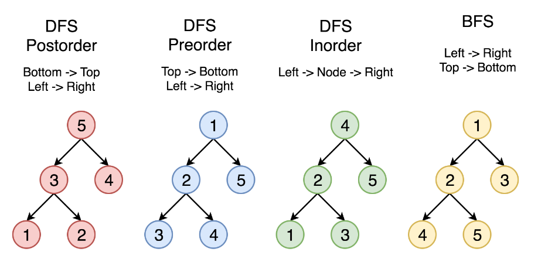
Idea della DFS La DFS (Depth-First Search, ricerca in profondità) esplora un grafo/albero seguendo questa strategia: da un nodo corrente si visita un vicino non ancora visitato e si continua “andando avanti” il più possibile lungo quel ramo. Quando non ci sono più vicini non visitati, si torna indietro (backtracking) all’ultimo nodo che aveva ancora alternative e si riprende da lì.Nel caso dei grafi, la DFS deve mantenere un insieme/array visited per evitare di entrare in cicli e rivisitare nodi già esplorati.
Ordini di visita: pre-order, post-order, in-order
- Pre-order: Nodo → Figli
- Post-order: Figli → Nodo
- In-order (binario): Sinistra → Nodo → Destra
Correttezza dei passi dell’algoritmo
(a) Esistenza e calcolo del ciclo euleriano
Dopo il raddoppio degli archi di $T$, ogni nodo ha grado pari, perché il grado di ciascun nodo raddoppia rispetto a quello nell’albero.
Per il teorema di Eulero, un grafo connesso in cui tutti i nodi hanno grado pari ammette un ciclo euleriano.
Il ciclo $E$ può essere calcolato in tempo polinomiale, ad esempio seguendo una visita DFS in pre-ordine dell’albero $T$.
(b) Costruzione del ciclo hamiltoniano
Il ciclo hamiltoniano $H$ si ottiene visitando i nodi nell’ordine in cui compaiono in $E$, includendo ogni nodo solo la prima volta e saltando le visite successive.
Questa operazione è sempre possibile perché il grafo di partenza $G$ è completo: tra ogni coppia di nodi esiste un arco, anche se non appartiene a $E$.
Grazie alla disuguaglianza triangolare, la sostituzione di un cammino con un arco diretto (shortcut) non aumenta il costo.
Teorema – Fattore di approssimazione
Teorema. L’algoritmo descritto è una 2-approssimazione per il problema TSPdt.
Dimostrazione
La dimostrazione si basa su due osservazioni fondamentali.
(1) Bound superiore sul costo della soluzione approssimata
Il ciclo euleriano $E$ percorre ogni arco di $T$ esattamente due volte, quindi: $$ cost(E) = 2 \cdot cost(T) $$.
Poiché il ciclo hamiltoniano $H$ si ottiene da $E$ tramite shortcut che non aumentano il costo, vale: $$ cost(H) \le cost(E) \le 2 \cdot cost(T) $$.
(2) Bound inferiore sul costo della soluzione ottima
Sia $H^$ un ciclo hamiltoniano ottimo. Rimuovendo un arco da $H^$ otteniamo un albero di copertura $T'$, per cui: $$ cost(T') \le cost(H^*) $$
Poiché $T$ è un minimum spanning tree, vale anche: $$ cost(T) \le cost(T') $$
Combinando le disuguaglianze otteniamo: $$ cost(H^*) \ge cost(T) $$
Conclusione
Dalle due osservazioni segue: $$ cost(H) \le 2 \cdot cost(H^*) $$
Tightness dell’analisi
Il fattore di approssimazione $2$ è tight, cioè non migliorabile per questo algoritmo.
Esempio
Consideriamo un grafo completo con $n$ nodi e pesi definiti come segue: - $c(1,v) = 1$ per ogni $v = 2, \dots, n$; - $c(v,v+1) = 1$ per $v = 1, \dots, n-1$ e $c(n,1) = 1$; - tutti gli altri archi hanno costo $2$.
Esiste un ciclo hamiltoniano ottimo di costo: $$ cost(H^*) = n $$
Il minimum spanning tree può essere una stella centrata nel nodo 1, di costo $n-1$. Il ciclo euleriano risultante passa ripetutamente dal centro e, dopo le shortcut, il ciclo hamiltoniano approssimato utilizza: - $n-2$ archi di costo $2$, - $2$ archi di costo $1$.
Il costo totale è quindi: $$ cost(H) = 2(n-2) + 2 = 2n - 2 $$
Il rapporto di approssimazione è: $$ \frac{cost(H)}{cost(H^*)} = \frac{2n-2}{n} \to 2 \quad \text{per } n \to \infty $$
Osservazione finale
Questo algoritmo è concettualmente semplice ma non sfrutta informazioni strutturali più profonde del problema. Per migliorare il fattore di approssimazione è necessario introdurre tecniche più raffinate, come nel caso dell’algoritmo di Christofides (3/2-approssimazione).
3.1.2 Algoritmo di Christofides (TSPdt) — 3/2-approssimazione
Contesto e assunzioni
Consideriamo TSP con disuguaglianza triangolare su grafo completo $G=(V,E)$ con costi $c$ tali che: $c(u,w) \le c(u,v) + c(v,w)\ \ \forall u,v,w \in V$. L’idea è costruire un multigrafo euleriano più economico rispetto al “raddoppia-MST” della 2-approssimazione.
Matching e Perfect Matching
- Matching: insieme di archi a due a due disgiunti (nessun vertice è incidente a più di un arco del matching).
- Perfect matching: matching che copre tutti i vertici (ogni vertice è incidente esattamente a un arco del matching). Condizione necessaria: il numero di nodi deve essere pari.
Algoritmo di Christofides (schema)
- Calcola un MST $T^*$ di $G$.
- Sia $V_d$ l’insieme dei nodi di grado dispari in $T^*$. Considera il sottografo completo $G_d$ indotto da $V_d$.
- Calcola un minimum-weight perfect matching $M^*$ su $G_d$.
- Costruisci il multigrafo $G' = T^ \uplus M^$ (unione multinsieme degli archi).
- Calcola un ciclo euleriano $E$ in $G'$.
- Da $E$ costruisci un ciclo hamiltoniano $H$ facendo shortcut (salti i nodi già visitati).
- Restituisci $H$.
Perché l’algoritmo è sempre eseguibile
(a) Esistenza del perfect matching su $G_d$
Serve che $|V_d|$ sia pari. Questo vale sempre perché in qualunque grafo la somma dei gradi è $2|E|$ (pari). Separando la somma dei gradi pari e la somma dei gradi dispari, la seconda deve essere pari; una somma di numeri dispari è pari solo se ci sono un numero pari di termini, quindi i nodi di grado dispari sono in numero pari.
Dato che $G_d$ è completo sui vertici $V_d$, l’esistenza del perfect matching segue, e il matching minimo si calcola in tempo polinomiale con algoritmi noti.
(b) Esistenza del ciclo euleriano in $G'$
In $T^$ i nodi in $V_d$ hanno grado dispari. Aggiungendo $M^$, ogni nodo di $V_d$ riceve esattamente un arco in più, quindi diventa di grado pari; i nodi già pari restano pari. Quindi tutti i gradi in $G'$ sono pari ⇒ esiste un ciclo euleriano $E$.
(c) Shortcut per ottenere un ciclo hamiltoniano
Come nella 2-approssimazione: seguendo l’ordine di $E$, si include un nodo solo la prima volta. Essendo $G$ completo e valendo la triangolare, gli shortcut sono sempre possibili e non aumentano il costo.
Teorema: fattore di approssimazione $3/2$
Teorema. Christofides è una $3/2$-approssimazione per TSPdt.
Idee chiave della prova
Sia $H^*$ un tour ottimo.
1) Lower bound da MST
Togliendo un arco da $H^$ otteniamo uno spanning tree, quindi:
$cost(H^) \ge cost(T^*)$.
2) Bound sul matching minimo Considera $V_d$ (nodi dispari di $T^$). Dal tour ottimo $H^$ otteniamo tramite shortcut un ciclo $\Gamma$ che visita solo $V_d$ e: $cost(\Gamma) \le cost(H^*)$ (triangolare).
Poiché $|V_d|$ è pari, $\Gamma$ ha lunghezza pari e si può decomporre alternando gli archi in due matching disgiunti $M_1$ e $M_2$: $cost(\Gamma)=cost(M_1)+cost(M_2)\ge 2\cdot cost(M^)$, da cui: $cost(M^) \le \frac{cost(H^*)}{2}$.
3) Costo del tour euleriano e shortcut Il ciclo euleriano usa tutti gli archi di $T^$ e $M^$: $cost(E)=cost(T^)+cost(M^)$, e lo shortcut non aumenta: $cost(H)\le cost(E)$.
Conclusione
$cost(H)\le cost(T^)+cost(M^) \le cost(H^)+\frac{cost(H^)}{2}=\frac{3}{2}cost(H^*)$.
Complessità (alto livello)
- MST: tipicamente $O(m\log n)$ (su completo $m=\Theta(n^2)$).
- Step dominante: minimum-weight perfect matching su $|V_d|\le n$, tipicamente $O(n^3)$ (come ordine di grandezza). Quindi il costo è dominato dal matching.
Note utili per l’orale
- Il “trucco” rispetto alla 2-approx è sostituire il raddoppio dell’MST con l’aggiunta di un matching minimo solo sui nodi dispari: così rendi euleriano il grafo spendendo “circa metà OPT” invece di “+MST intero”.
- La parte delicata della prova è mostrare $cost(M^*)\le OPT/2$ usando $\Gamma$ e la decomposizione in due matching.